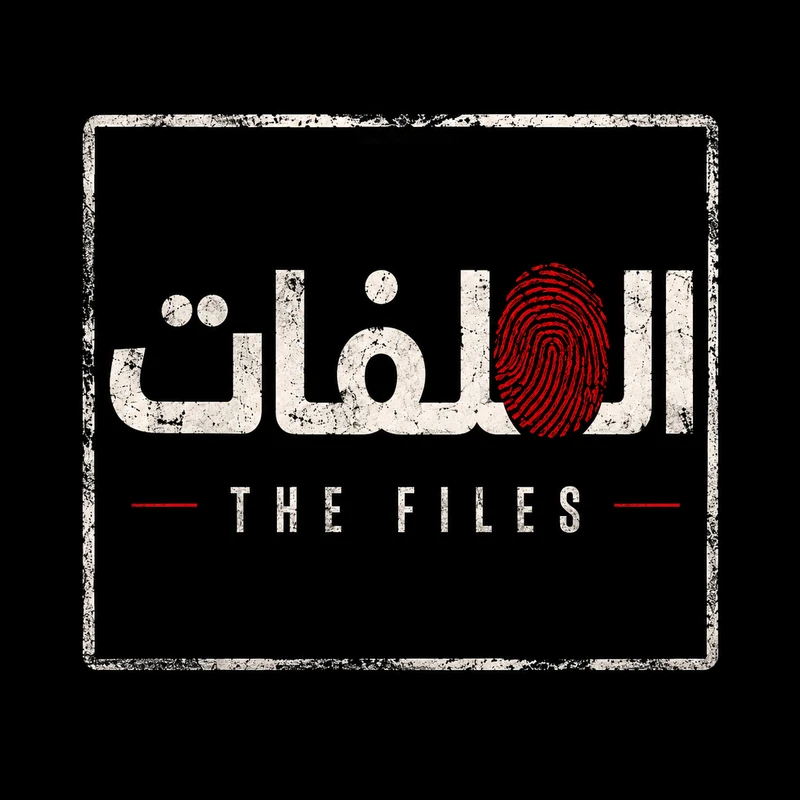

FILE #001
جرين بوتس
جثة متسلق بقيت لسنوات علامة صامتة على أحد أشهر طرق الصعود إلى قمة إيفرست.
فتح الملف←
أرشيف وثائقي عربي يجمع الحلقة، القصة الكاملة، الأدلة، التسلسل الزمني والمصادر الأصلية في ملف واحد.
آخر ملف تمت إضافته إلى الأرشيف.
زعيم نقابي أمريكي كان يملك نفوذًا هائلًا، ثم اختفى في ظروف غامضة وسط نظريات مرتبطة بالجريمة المنظمة.
فتح التحقيقابحث بالاسم أو التصنيف أو السنة.
جثة متسلق بقيت لسنوات علامة صامتة على أحد أشهر طرق الصعود إلى قمة إيفرست.
اختفاء داخل فندق سيسيل، وتسجيل أسانسير تحوّل إلى واحد من أشهر مقاطع القضايا الغامضة.
رجل خطف طائرة، حصل على فدية، قفز بالمظلة ثم اختفى بلا أثر مؤكد.
الأسطورة التي ألهمت فيلمًا عالميًا، ثم بدأت سجلات حقيقية تشكك في أجزاء أساسية منها.
زعيم نقابي نافذ خرج إلى اجتماع واختفى للأبد وسط شبهات مرتبطة بالجريمة المنظمة.
وثيقة رسمية، سجل محكمة، جهة تحقيق أو أرشيف صحفي أصلي كلما أمكن.
كل معلومة تُصنّف بوضوح: مثبتة، مرجحة، محل خلاف أو مجرد ادعاء.
عند ظهور معلومات موثوقة جديدة، يتم تحديث الصفحة وتسجيل تاريخ المراجعة.

مش مجرد فيديو قصير. كل حلقة لها ملف مستقل يضم القصة بالتفصيل، وما هو مؤكد، وما بقي مجهولًا، والمصادر التي بُني عليها التحقيق.
مشروع وثائقي مستقل من إعداد وتقديم محمد رمزي.